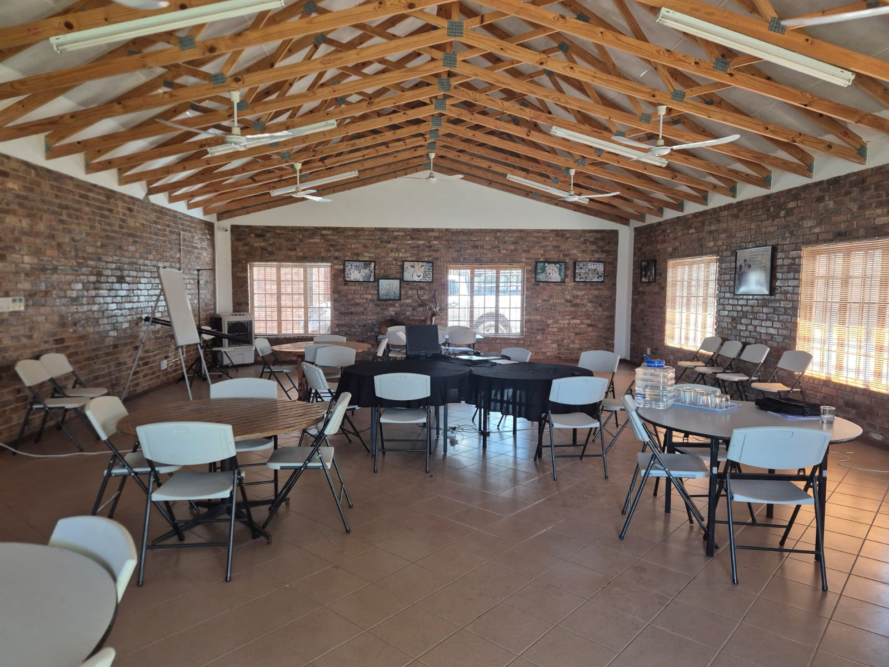
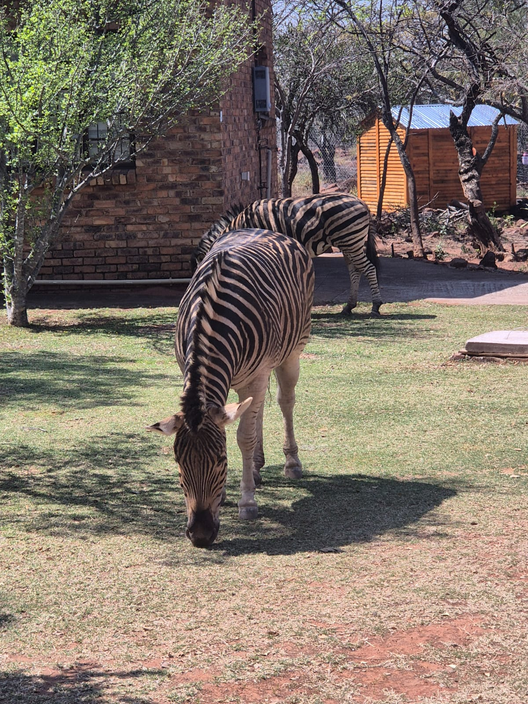

Our Campus Environment
Experience ministry training in a beautiful mountain retreat setting




SAQA Accredited Theological Training in a Transformative Mountain Retreat Setting
NQF Level 5 qualifications recognized nationally and internationally
Personalized guidance from experienced ministers throughout your journey
Learn in a peaceful camping environment designed for spiritual growth
Regular face-to-face sessions combined with flexible study options
Our vision is to equip and empower leaders through transformative training in a unique mountain retreat setting.
On The Mountain Revival Centre, in partnership with Excel Theological Training Academy, offers comprehensive ministry training that combines academic excellence with practical spiritual formation. Our programs are SAQA accredited and ACRP registered, ensuring you receive quality education recognized across South Africa and beyond.
Located at a serene camping facility, our campus provides the perfect environment for deep learning, spiritual reflection, and community building away from the distractions of everyday life.
Learn More About UsChoose the pathway that aligns with your calling
Experience theological education in a unique mountain camping environment designed to deepen your faith and focus your calling.
Experience ministry training in a beautiful mountain retreat setting
Join a community of faith-driven leaders preparing to make an eternal impact. The 2026 intake is now open!
Start Your ApplicationContact Pieter Trollip: +27 62 124 2113 | pieter@mountainrevivalcentre.co.za